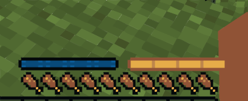

Welcome to the Jump² Wiki
Select a topic from the sidebar to get started!
You can learn about the mechanics in the mod, and see the Q&A here.
Mechanics
The mechanics in this mod are fairly simple as it mostly consists of old arcade
style double jump and jump boost mechanics!
New Bars:

In the image above, you can see the 2 new bars that the mod adds.
Blue Bar:
The blue bar indicates the double jump cooldown. When double jumping, the bar will change to black.
Meaning that you can't double jump again until the bar is full (this cooldown is about 4 seconds).
Gold Bar:
The gold bar indicates the boost jump charge, this bar will always be black until you hold the "sneak" keybind.
This will slowly fill the bar. When it is fully gold colored, you can then press the "sneak" keybind again and you will launch into the air.
You can disable and enable both with "G" (by default). It will also be ON be default!
Both of the bars will consume hunger over time, you will also take damage from both so be cautious when using them!
Q&A
I will try to answer as many questions as I can.
If you have a question that isn't here, you can also ask on the GitHub page .
Q: What does this add / do?
- This mod allows you to double jump and boost jump, increasing the jump height to 5+ blocks.
Q: Will this mod be ported to Forge or NeoForge?
- Nope. I just don't have the time to maintain multiple mod versions. You can look at the `DEV TALK` page here for a detailed answer.
Q: How do I get access to betas?
- You can access betas via my Ko-fi page.
Q: Can you add... / How do you use...?
- You can suggest stuff on the GitHub issues page. I will try to answer any questions!
Q: Can I toggle it on and off?
- You can, with "G" by default (you can change that)